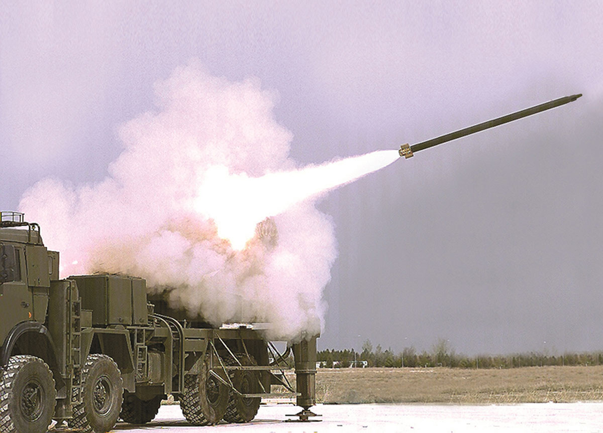
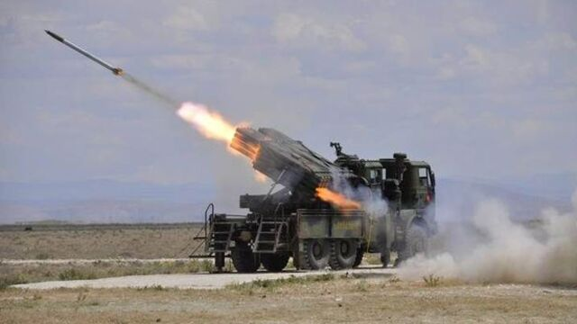

Genel Bilgi
TRG-122, 122 mm sınıfındaki çok namlulu roketatar sistemlerinden atılabilen güdümlü roket mühimmatıdır. Yüksek öncelikli hedeflere karşı hassas ve etkili ateş gücü sağlamak amacıyla geliştirilmiştir.
Sistem; kısa sürede atışa hazır hale gelebilmesi, düşük istenmeyen etki oluşturması ve hassas vuruş kabiliyeti sayesinde modern topçu harekâtında önemli bir çözüm olarak öne çıkar.
TRG-122, mevcut 122 mm çok namlulu roketatar altyapısını daha hassas vuruş yeteneği ile destekleyerek radar mevzileri, hava savunma sistemleri, lojistik tesisler ve komuta-kontrol hedefleri gibi kritik unsurlara karşı kullanılabilir.
Temel Özellikler
Menzil
13–30 km
Çap
122 mm
Ağırlık
74.6 kg
Güdüm
INS
Harp Başlığı
13.5 kg
Hassasiyet
≤ 10 m
Teknik Özellikler
| Mühimmat Tipi | 122 mm güdümlü roket |
| Adı | TRG-122 |
| Görev Alanı | Yüksek öncelikli hedeflere karşı hassas ve etkili ateş desteği |
| Çap | 122 mm |
| Ağırlık | 74.6 kg |
| Menzil | 13–30 km |
| Güdüm | INS (Ataletsel Seyrüsefer Sistemi) |
| Kontrol | Elektromekanik tahrik sistemi ile aerodinamik kontrol |
| Yakıt Tipi | Kompozit katı yakıt |
| Harp Başlığı Tipi | Yüksek patlayıcı + çelik bilye |
| Harp Başlığı Ağırlığı | 13.5 kg |
| Etki Yarıçapı | ≥ 40 m |
| Tapa Tipi | Çarpma ve yaklaşma |
| Raf Ömrü | 10 yıl |
| Hassasiyet | ≤ 10 m |
| Atış Platformu | 122 mm çok namlulu roketatar sistemleri |
| Öne Çıkan Özellik | Mevcut 122 mm roketatar sistemlerine hassas vuruş kabiliyeti kazandıran yerli güdümlü roket |
Hedef Seti ve Operasyonel Kullanım
| Radar Mevzileri | Radar sahaları ve sensör mevzileri |
| Topçu Sistemleri | Topçu ve karşı batarya hedefleri |
| Hava Savunma Sistemleri | Hava savunma bataryaları ve ilgili unsurlar |
| Lojistik Tesisler | Depo, ikmal ve lojistik altyapılar |
| Toplanma Bölgeleri | Birliklerin toplanma ve intikal alanları |
| Komuta-Kontrol | C3 / komuta-kontrol-haberleşme tesisleri |
| Görev Koşulları | 7/24 her hava ve arazi şartında kullanım kabiliyeti |
| Atışa Hazırlık | Çok kısa sürede atışa hazır olma |
| İstenmeyen Etki | Düşük collateral damage yaklaşımı |
Görseller


